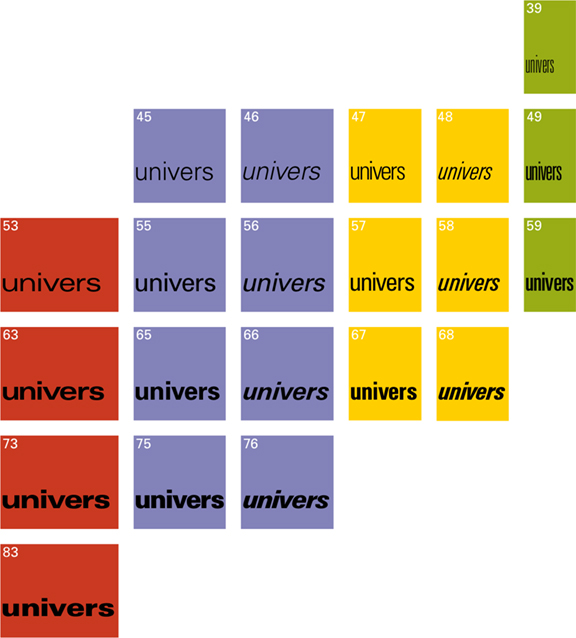

Before Frutiger began his career at Deberny & Peignot, a type foundry that eventually merged into Linotype, it was the norm for typefaces to have only one or two styles. Some of them would eventually be expanded to be more applicable, sometimes by a different designer. Still, designers back then would have to combine different typefaces to cover a wide range of work.
This changed after the development and release of Univers, the typeface that earned Frutiger his worldwide recognition. Univers is the first typeface to have an innately expansive family, consisting of twenty-one variations in weight and stance. These styles were developed alongside each other and released simultaneously as one family (Fischbacher). This resulted in a more inherently coherent and universally applicable family of types.
After its initial success, Univers continued to be expanded. In addition to the original twenty-one styles, thirty-five other variations were produced by several manufacturers before Linotype redesigned the family to include a total of fifty-nine styles. Univers was built upon to be applicable in photosetting, typewriters, digital uses, and more (Osterer and Stamm pp. 104-106, 109).
Univers was the beginning of extensive and versatile families. Arial, Lucida, and Open Sans are some of the inherently large families released after Univers. Several of Frutiger’s other fonts were also developed with numerous variations and later expanded, though none is as expansive as Univers. The variety granted by a large family like Univers opens possibilities for designers. A designer now only needs one font family to do almost anything.

All the styles of Univers in 1995 (“Adrian Frutiger”).